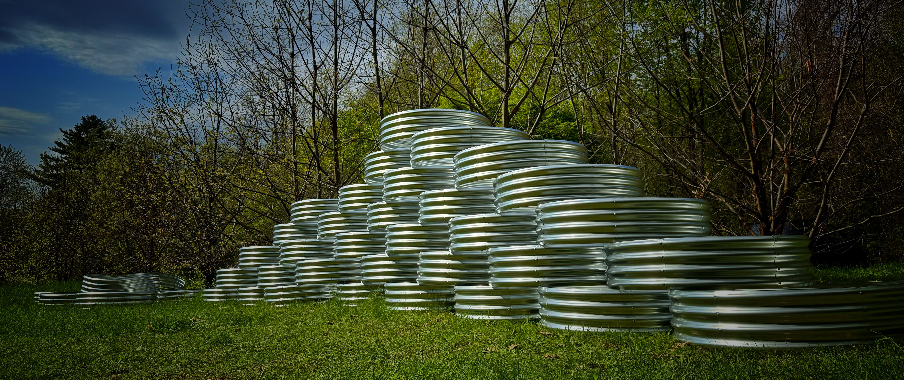
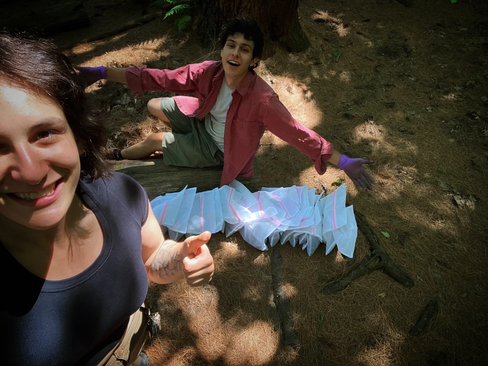
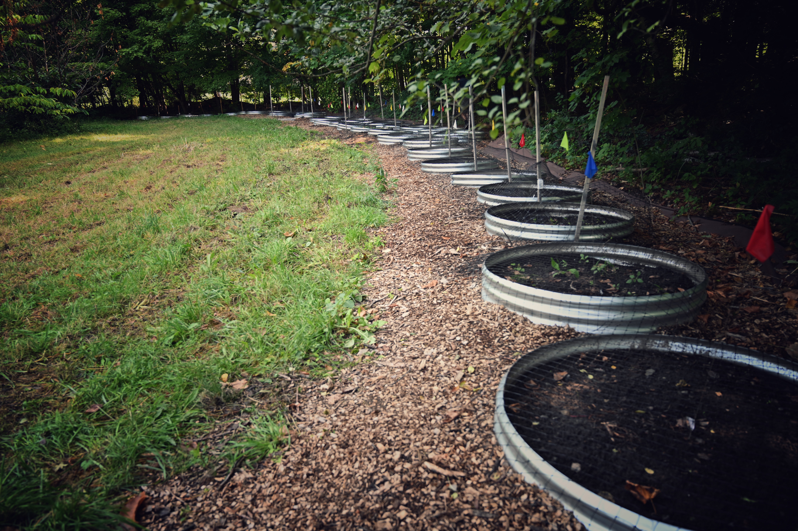

Project Update
What we did in 2025
Last year was really about getting everything set up and building a solid foundation for the project. We established a large raised-bed experiment at the UVM Horticulture Research & Education Center, with 40 beds placed along a forest edge so we could work in conditions where jumping worms are likely to thrive—but still keep things controlled. We also installed temperature and moisture sensors so we can track what’s happening in the soil over time.

Assembled raised beds prior to soil filling and experimental setup.

Our team members Nolan Kurtz and Ollie Leibovich collecting jumping worms for introduction into experimental beds.

Raised-bed experimental setup at the UVM Horticultural Research & Education Center used for evaluating management strategies.
Raised-bed experimental setup at the UVM Horticultural Research & Education Center used for evaluating management strategies.
We tested a range of treatments, including different crops, mustard cover crops, some biological control approaches, and a set of baited traps to see what kinds of materials might attract worms. We introduced jumping worms at consistent densities so we can compare results across treatments moving forward. Since this was our first year, we didn’t expect to see strong treatment effects yet—and we didn’t. That’s actually normal. It takes time for worm populations and soil processes to stabilize, so this year mostly gives us a baseline to compare against in the next phases.
We also ran some small baited trap trials. Worms did show up more inside traps than in the surrounding soil, which is encouraging for developing better monitoring tools, but it’s still early and more refinement is needed. On the outreach side, we connected with 26 different operations across Vermont and New York—ranging from vegetable farms to nurseries and compost operations. About half reported having jumping worms, and half didn’t, which gives us a really nice range of conditions to work with.
Interestingly, even though several farms reported worms, we only detected cocoons in a couple of those sites. That tells us two things: identification is still tricky, and worm populations can be very patchy. So moving forward, we’re planning more detailed and repeated sampling to get a clearer picture.
We also stayed in close touch with our advisory group, getting feedback on the project design and what matters most to growers.
- We presented our early research results from this project, and other ongoing projects on jumping worms in the following events:
- UVM Horticultural Research & Education Center Field Day (August 14, 2025): Demonstrations of field trial design, monitoring approaches, and biological control concepts; ~35 participants.
- UVM Extension Master Gardener Conference (November 22, 2025): Presentation on jumping worm biology, identification, and management; ~73 participants. Educational materials were made available online.
- NOFA-VT (February 14, 2026): Presentation on research update, including jumping worms project; ~21 participants. Educational materials were made available online.
What’s next 2026
This coming season, we’ll start early soil and cocoon sampling on farms, continue the raised-bed trials with full-season data, test solarization more directly, and expand on-farm monitoring and treatments. We’ll also keep building out workshops, field days, and resources so we can share what we’re learning as we go.